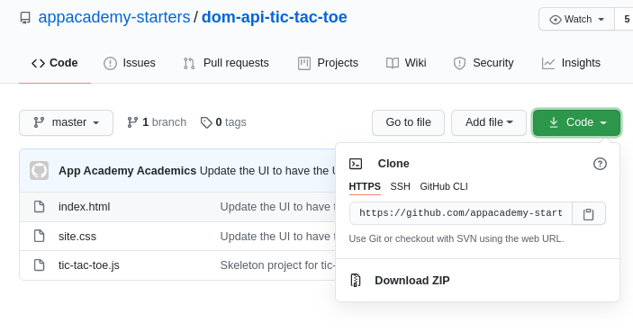
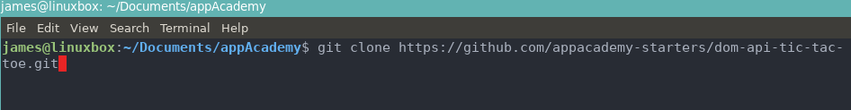
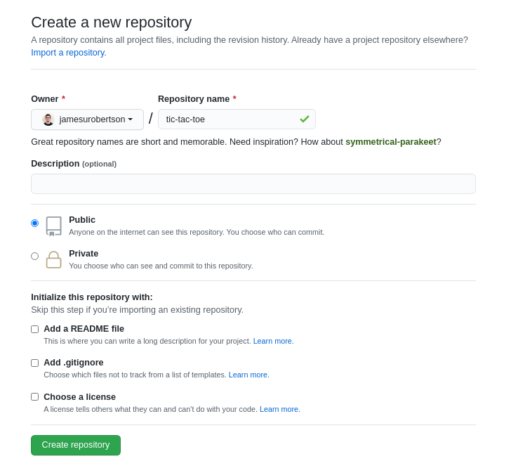
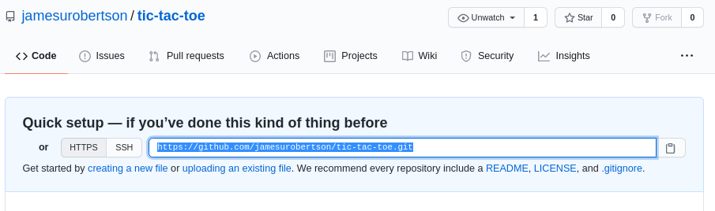

Steps to clone and change origin to push to your own repo
1. The first step is to clone the repo!
Navigate to the repo you want to clone and hit the big green code button. Copy the link given.
clone-repo
Navigate in your terminal to the directory where you want this repo to live. I chose ~/Documents/appAcademy
git clone HTTPS://LINKTOURL/THATYOUCOPIED
git-clone
2. Sweet, you have the cloned repo in your preferred directory. Now lets make your own repo. On github, create a new repository.
Default settings are fine. Hit the big green button Create Repository
create-repo
3. Next, copy the .git link that is on the next page. Do not do any other steps on this page - That is for when you do not clone a repo.
your-dotgit
4. Whenver you clone a repo it already has a .git directory with certain configurations set up. To be able to push this repo to your newly created GitHub repo we have to change the remote origin.
To do that, just run this command: (Make sure you are inside the repo you cloned)